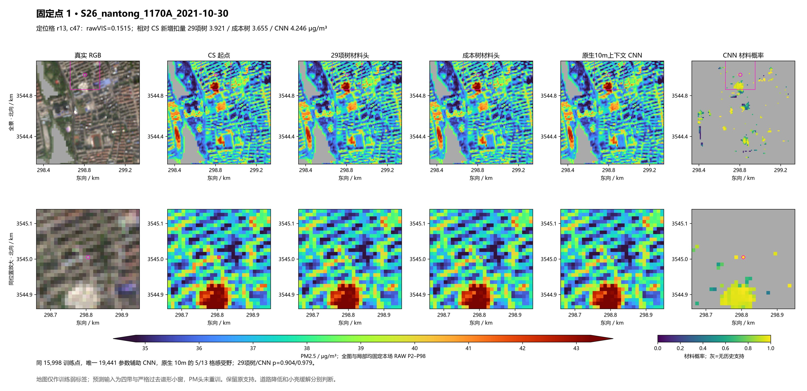
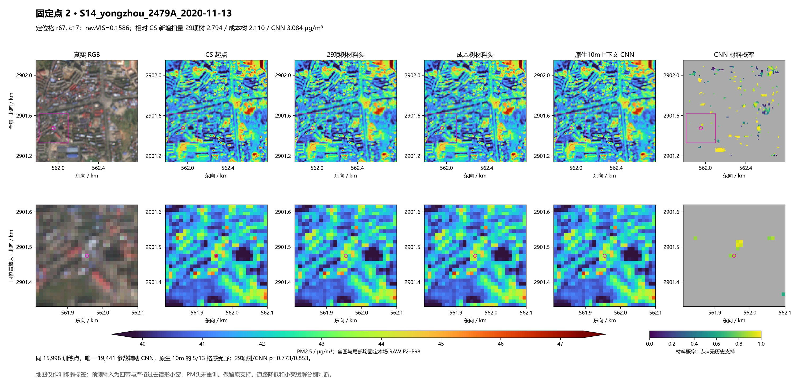
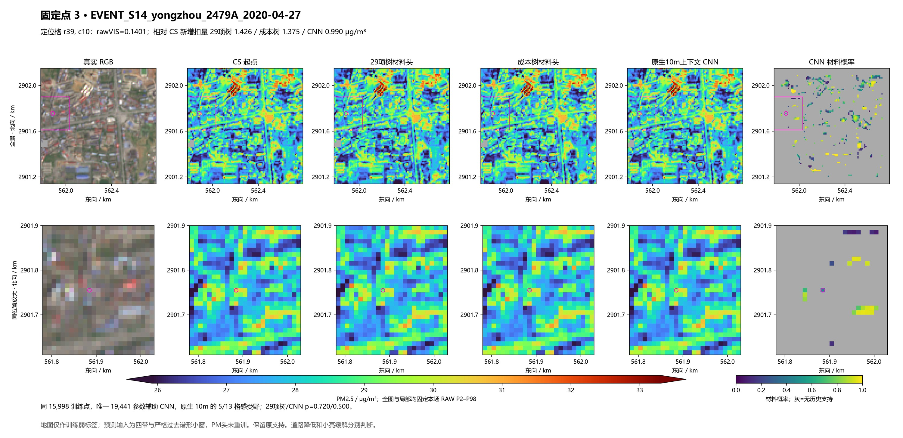
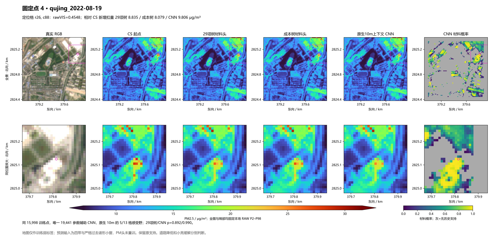
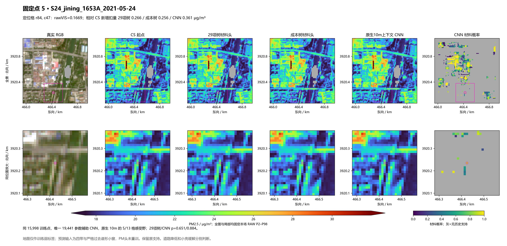
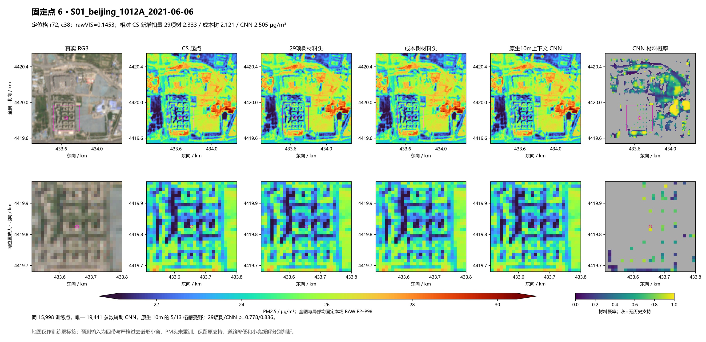

四BOA与严格过去模板组成13×13小窗，5/13格两尺度卷积判断材料概率；地图只作为训练弱标签，不作为预测输入。与23/29材料头使用同15,998训练点。本页保留固定6处有利及不利位置，不挑好场换图。
实际结论：留出弱标签 BA 0.732→0.793，原30小亮对象平均追加降低 0.103→0.121 μg/m³；但南通、永州个别道路格扣量更大，未证明站窗PM更准。
实际结果与代价 · 固定合同 · 同支持比较 · 弱标签分类 · 原30对象 · 25日期对
定位格相对 CS 新增扣量：29项树 3.921、成本树 3.655、CNN 4.246 μg/m³；降低更多并不自动等于改善。

定位格相对 CS 新增扣量：29项树 2.794、成本树 2.110、CNN 3.084 μg/m³；降低更多并不自动等于改善。

定位格相对 CS 新增扣量：29项树 1.426、成本树 1.375、CNN 0.990 μg/m³；降低更多并不自动等于改善。

定位格相对 CS 新增扣量：29项树 8.835、成本树 8.079、CNN 9.806 μg/m³；降低更多并不自动等于改善。

定位格相对 CS 新增扣量：29项树 0.266、成本树 0.256、CNN 0.361 μg/m³；降低更多并不自动等于改善。

定位格相对 CS 新增扣量：29项树 2.333、成本树 2.121、CNN 2.505 μg/m³；降低更多并不自动等于改善。
